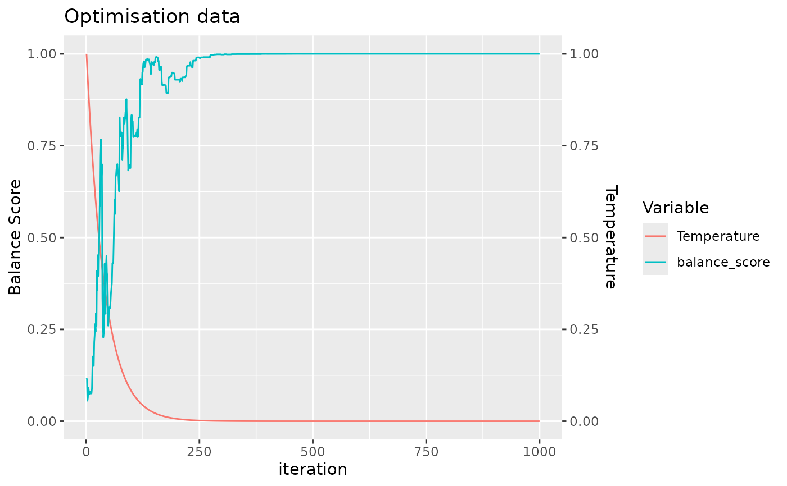
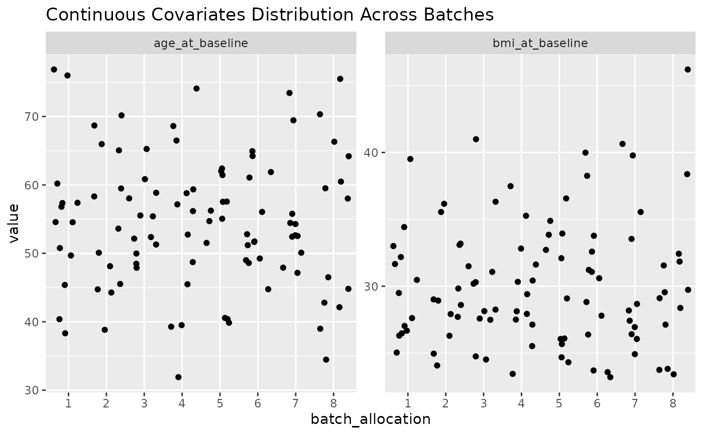
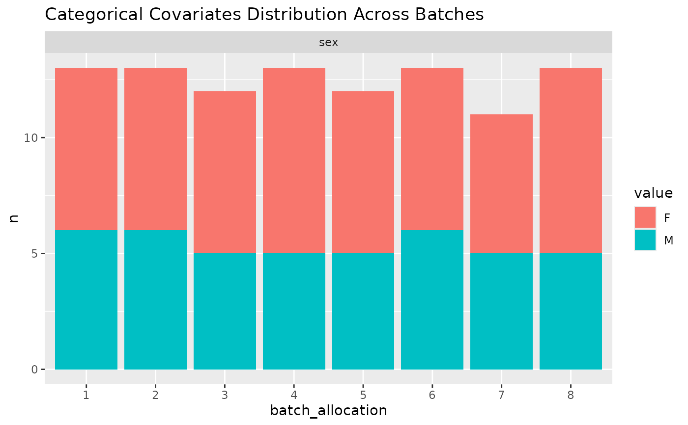

Plot the Layout of Samples by Covariate Type
plot_layout.RdThis function generates two types of plots for the given layout: one for continuous covariates and another for categorical covariates. It visualizes how samples are allocated across batches, with separate plots for each covariate.
Arguments
- output
A lsit created by
allocate_samples(), containing an item calledlayoutwhich isdata.framecontaining the layout information, including sample IDs, batch allocation, and covariates. Thebatch_allocationcolumn is expected to indicate the batch each sample is assigned to, and covariates can be of numeric or factor type.- id_column
The name of the column in the layout data frame that contains the sample IDs. The default value is "sample_id".
- covariates
A character vector of covariate names to be visualized. The default value is
NULL, which will visualize all covariates in the layout data frame.
Value
The function does not return an object; instead, it directly prints two plots to the R graphics device. The first plot visualizes the distribution of continuous covariates across batches, using a scatter plot for each covariate. The second plot shows the distribution of categorical covariates using a bar plot for each covariate level across batches.
Details
The function first processes the layout to separate continuous and categorical covariates. For continuous covariates, it creates a scatter plot showing the value of each covariate by batch. For categorical covariates, it aggregates the data to count the number of samples in each category by batch and then creates a bar plot. Both plots are faceted by covariate to provide a clear and comparative view of the distribution across batches.
Examples
my_data = simulate_data(n_samples = 100)
allocated_data <- allocate_samples(data = my_data,
id_column = "sample_id",
method = "simulated_annealing",
covariates = c("covariate1", "covariate2", "covariate3"),
batch_size = 13)
#> No blocking variable specified.
#> Covariate: covariate1 - continuous
#> Covariate: covariate2 - continuous
#> Covariate: covariate3 - categorical
#> Number of samples: 100

#> Joint probability that the final layout is balanced: 0.9999991
#> Joining with `by = join_by(covariate1, covariate2, covariate3, sample_id)`
plot_layout(allocated_data, covariates = c("covariate1", "covariate2", "covariate3"))
#> Warning: Removed 8 rows containing missing values or values outside the scale range
#> (`geom_point()`).

